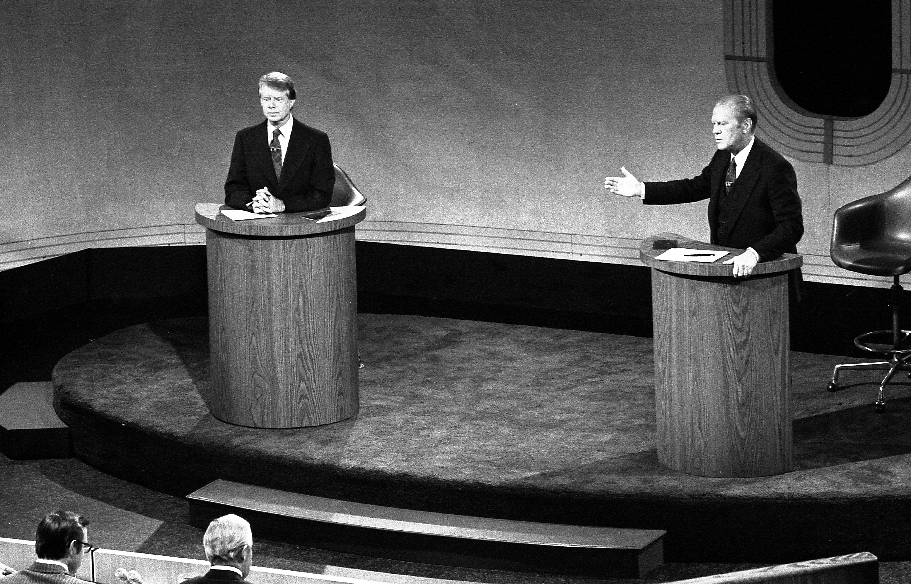

Five Most Watched Debates in U.S. History

While the U.S. presidential debates in 2024 have been historic, they do not rank among the five most viewed.
1. The first debate between President Barack Obama and Sen. Mitt Romney garnered 84 million views on Oct. 3, 2012.
2. The second debate between President Jimmy Carter and then-Gov. Ronald Reagan garnered 80.6 million views on Oct. 28, 1980.
3. The first debate between President Donald Trump and Joe Biden garnered 73.1 million views on Sept. 29, 2020.
4. The third debate between Donald Trump and former Secretary of State Hillary Clinton garnered 71.6 million views on Oct. 9, 2016.
5. The second debate between President George H. W. Bush and former Gov. Bill Clinton garnered 69.9 million views on Oct. 15, 1992.